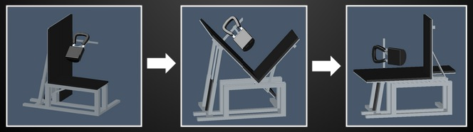
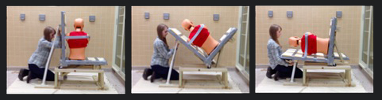
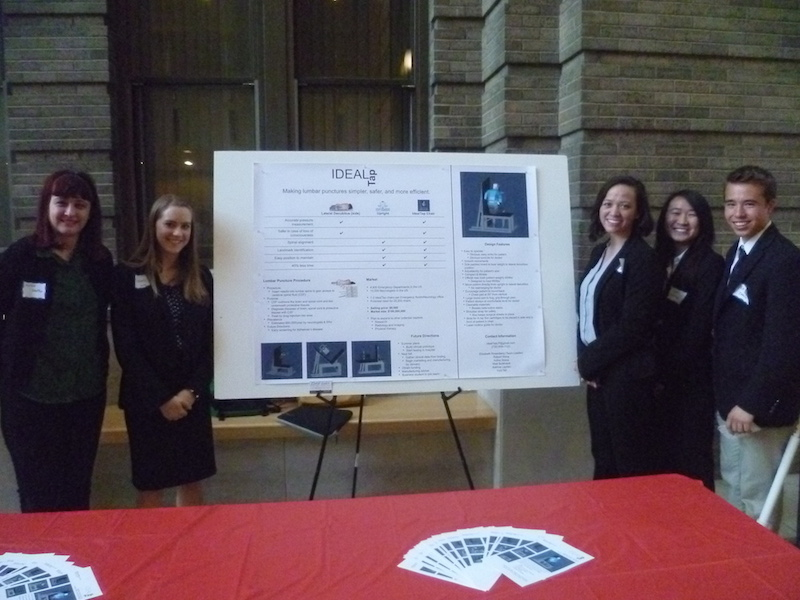
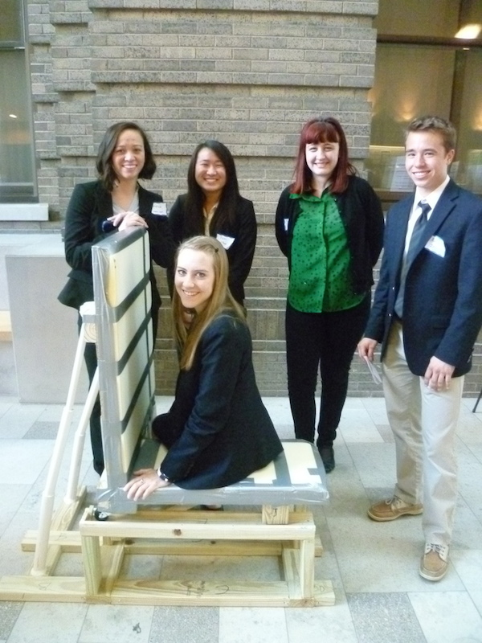
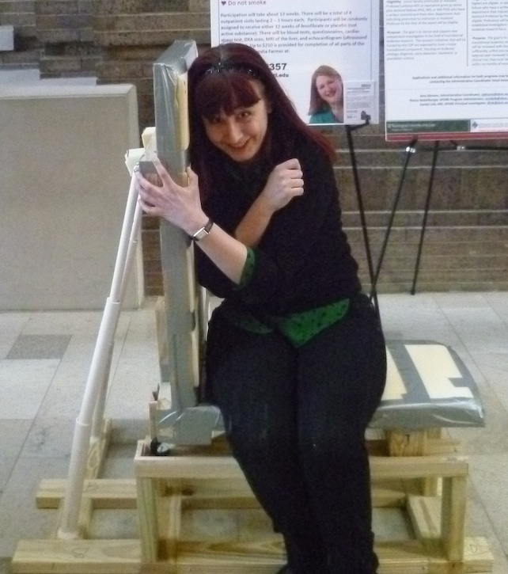
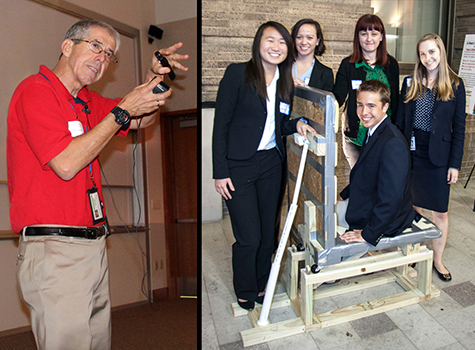

Projects > IdealTap Chair Project
IDEA Labs is a bioengineering design and entrepreneurship incubator at Washington University in St. Louis which brings together students, faculty, staff and St. Louis entrepreneurs to work
on and guide projects that solve problems in healthcare delivery and clinical medicine.
For this project, I worked in a multidisciplinary team of students, with two medical students and three undergraduate students in engineering. Our
team,
IdealTap, worked on an innovative lumbar puncture chair, that would make the spinal tap procedure less time-consuming and easier for the physician, while maximizing the patient's comfort and safety.

The in silico model transitioning between positions: upright (left), transition (middle), lateral decubitus (right).

The wooden prototype transitioning between positions: upright (left), transition (middle), lateral decubitus (right).
There are two main position in which a patient can be placed during the lumbar puncture procedure, either upright (sitting), or in lateral decubitus (curled up on one side), and each of these positions has advantages and disadvantages. Our aim was to
create a manipulative chair that can easily and safely transition a patient between the two positions so that the doctor can take advantage of both.


Pictures with our poster (left) and our chair prototype (right) at Demo Day.
For the project, we created an in silico design using AutoCAD, and built a full-size, wooden proof-of-concept prototype, which was presented, along with a poster, at Idea Labs Demo Day on April 18, 2014. We have also submitted a provisional patent on
April 17th.

Me, sitting on our IdealTap Lumbar Puncture Chair at Demo Day.
The
Washington University Newsroom wrote
about us after Demo Day! You can also check out
this article to see where it all started.

These photos are © ALLISON BRAUN.